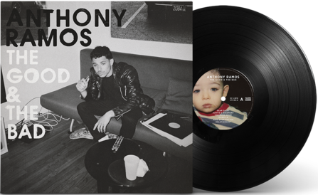

The Good & the Bad (2019)
If you are a fan of the Broadway musical Hamilton like I am, you should check out the original cast members' music!
Anthony Ramos, who played dual roles of John Laurens and Philip Hamilon, is a very taleted singer and songwriter.
His debut album The Good & the Bad is a sonically cohesitve autobiography detailing the ups and downs of Ramos' journey towards success, which combines jazz, R&B, and pop.
Out of the 12 songs, my personal favorite is the last song on the album, Come Back Home. "I had to leave just to see how good I have it"
- Dear Diary
- Auntie's Basement
- One More Hour
- Isabella
- Mind Over Matter
- Relationship
- Little Lies
- Woman
- Figure It out
- Either Way
- The Good & the Bad
- Come Back Home